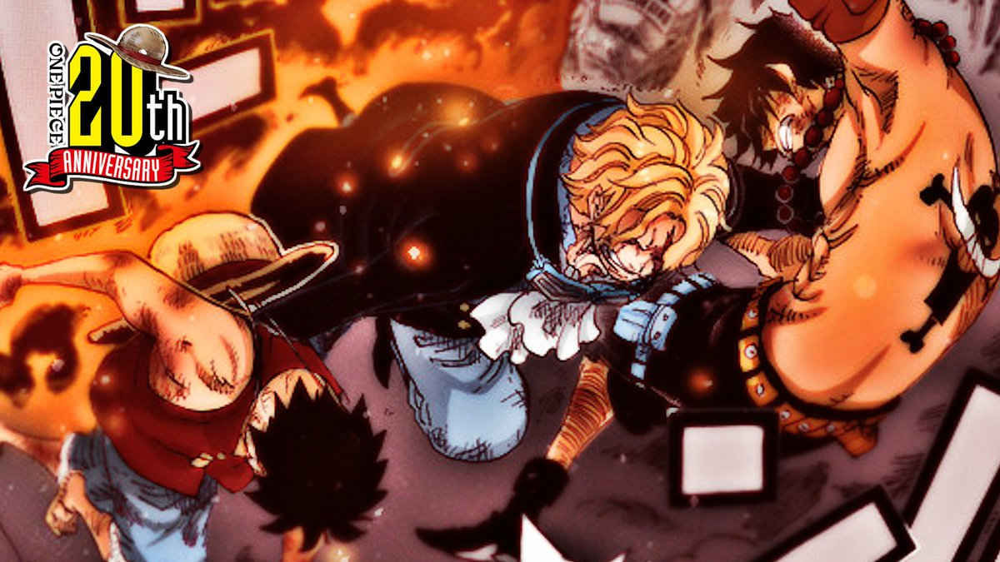
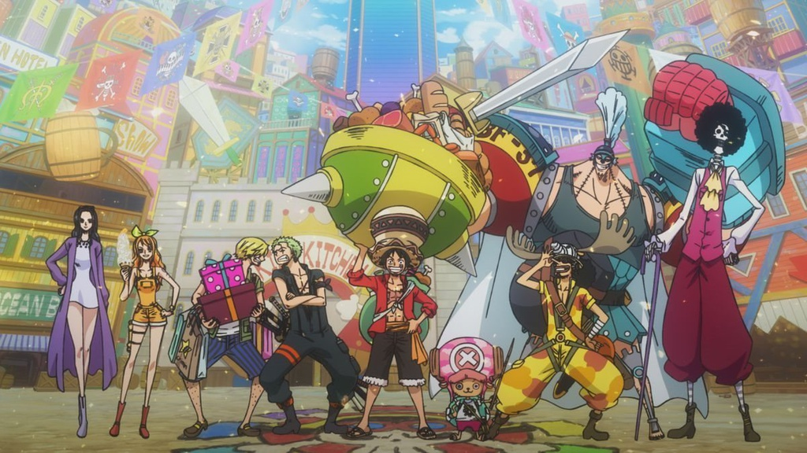
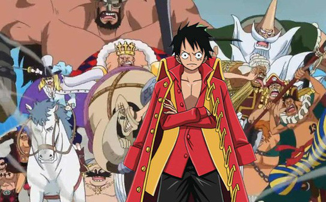
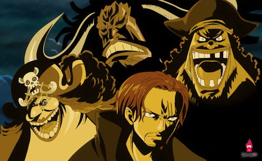
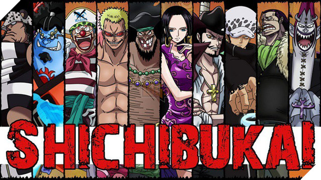

| HỌC LẬP TRÌNH TẠI SUNTECH VIỆT NAM |
Section 1Portgas D.Ace
Section 2Hạm đội Luffy
|
Section 33 anh em Luffy, Ace, Sabo
Search
|
| Cái chết của AceKhoảnh khắc Ace đứng ra đỡ đòn tấn công chí mạng của Akainu cho Luffy khiến bất cứ ai cũng phải cảm động rơi nước mắt và mãi mãi không thể nào quên. Ace tuy đã chết nhưng anh sẽ còn sống mãi trong lòng fan. |
 |
|  |
Lễ hội hải tặcOne Piece: Stampede lấy mốc thời gian giữa mùa thứ 20 của loạt phim hoạt hình cùng tên. Chuyện
phim bắt đầu khi “Râu Đen” Marshall D. Teach (Akio Ōtsuka) đại phá tầng thứ 6 nhà ngục Impel Down
và giải thoát cho Douglas Bullet (Tsutomu Isobe) - một trong những tay sai mạnh nhất của vua hải tặc
Gol D. Roger (Masane Tsukayama) năm xưa.Hai năm sau, Bullet bắt tay cùng Buena Festa (Yūsuke Santamaria)
tổ chức Lễ hội Hải tặc để tranh
đoạt chiếc chìa khóa dẫn đến kho báu One Piece do Roger để lại. Vô số hải tặc thuộc Thế hệ Tồi tệ đều
có mặt, bao gồm cả băng Mũ Rơm của Luffy (Mayumi Tanaka) và đồng bọn. |
Mục khác
| Các loại trái ác quỷ |
| Đại hải trình |
| Mức truy nã của các hải tặc |
| Gia tộc họ D |
| TỨ hoàng mạnh như thế nào? |
|
Mục khác
| Các loại trái ác quỷ |
| Đại hải trình |
| Mức truy nã của các hải tặc |
| Gia tộc họ D |
| TỨ hoàng mạnh như thế nào? |
|
Hạm đội mũ rơmĐại Hạm Đội Mũ Rơm (麦わら大船団 Mugiwara Dai-sendan?) là một tổ chức hải tặc đứng dưới trướng
Băng Hải tặc Mũ Rơm được 7 băng hải tặc tự nguyện thành lập sau sự kiện Dressora. Tổ chức này bao gồm các hải tặc đã mến
mộ Băng Hải tặc Mũ Rơm sau khi họ sát cánh trên chiến trường Dressrosa.
Tổng tiền thưởng cả hạm đội là 4,183,000,100 Beli |
 |
|  |
Tứ hoàngTứ Hoàng là tên gọi chung của 4 thuyền trưởng hải tặc mạnh nhất và nổi tiếng nhất được đặt bởi chính phủ,
có tầm quan trọng ảnh hưởng đến cả thế giới.
Dưới đây là danh sách của Tứ Hoàng trong phim hoạt hình Vua Hải Tặc (One Piece) |
Mục khác
| Các loại trái ác quỷ |
| Đại hải trình |
| Mức truy nã của các hải tặc |
| Gia tộc họ D |
| TỨ hoàng mạnh như thế nào? |
|
Mục khác
| Các loại trái ác quỷ |
| Đại hải trình |
| Mức truy nã của các hải tặc |
| Gia tộc họ D |
| TỨ hoàng mạnh như thế nào? |
|
 |
Thất Vũ Hải (Shichibukai) là một tổ chức gồm bảy tên cướp biển hùng mạnh và khét tiếng đã liên minh với Chính phủ Thế Giới.
Đây là một trong Tam Đại Thế Lực mạnh nhất trong One Piece làm cân bằng thế giới .Mặc dù họ làm việc cho Chính phủ Thế Giới,
nhưng chính Thất Vũ Hải cũng không quan tâm cũng như không tôn trong Chính phủ(ngoại trừ Bartholomew Kuma)
hay thậm chí là đối với những thành viên khác trong nhóm.
Phần lớn những thành viên Shichibukai là các cựu chiến binh Tân Thế Giới, những người đã gặp Yonko(tứ hoàng)
và thậm chí là chiến đấu lại chúng |